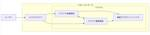
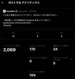

Money Forward Developers Blog
https://moneyforward-dev.jp/
株式会社マネーフォワード公式開発者向けブログです。技術や開発手法、イベント登壇などを発信します。サービスに関するご質問は、各サービス窓口までご連絡ください。
フィード

テックリードの大義 2
2
Money Forward Developers Blog
この記事は、Money Forward Fukuoka Advent Calendar 2024の12/8の投稿です。 12/7は RemiM さんで つよいエンジニア(物理)を目指した記録2024でした。 adventar.org こんにちは クラウド経費開発チームの 宮村（みやむー） @miyamura.koyo です。 2024年12月よりクラウド経費のテックリードのオファーをいただき、引き受けることにしました。クラウド経費は全体として大きなシステム・プロダクトになっているため、私は全ての技術領域ではなく、主にバックエンド領域においてリーダーシップを発揮する予定です。 本記事では、テック…
2日前
Money Forward Labでのやりがいと挑戦：研究開発職新入社員インタビュー
Money Forward Developers Blog
皆さん、こんにちは！新卒採用部の古田です。 今回は、マネーフォワードの研究開発組織である「Money Forward Lab」に新卒で入社した張さんにインタビューをさせていただきました。 マネーフォワードへ入社した経緯や、入社後の「Money Forward Lab」で感じたやりがいや今後のビジョンなど気になるアレコレを聞いてみました！ ── まずは、張さんのご経歴について教えてください。 中国出身で2017年に来日し、九州大学大学院で修士学位を取得しました。当時の専攻はユビキタスコンピューティング（ubiquitous computing）でした。 その後、東京都立大学大学院にて自然言語処理…
4日前

Kyoto.js #22 に「君は新しい日付/時刻API Temporal を知っているか？」で登壇しました 1
Money Forward Developers Blog
はじめに ジメジメムシムシと暑いを通り越し熱いになっている今日このごろどうお過ごしですか？ ぼくは夏バテなのか最近調子があまり上がらず、困っています。 ７月中に書き上げようと思っていたブログ記事を5ヶ月も寝かせる大罪を犯してしまいました。 どうも、マネーフォワードで技術広報をしている @luccafort です。 今日は6月（！）に登壇した Kyoto.js #22 の感想と参加したことで見えてきたこと、新たな体験を得たことについてダラダラと書いてみました。 いつも通り長文ではありますが、お時間があればお読みください。 ご意見ご感想はぜひこのブログのURLを引用してブログ記事などを書いていただ…
4日前

サーバーサイド Kotlin における技術選択 3
Money Forward Developers Blog
この記事は、Money Forward Engineering Advent Calendar 2024 12/4 の投稿です。 12/3 は VTRyo さんで SRE Kaigi 2025に 「一人から始めたSREチーム3年間の歩み -求められるスキルの変化とチームのあり方-」で登壇します でした。 adventar.org こんにちは、マネーフォワードでバックエンドエンジニアをしている @hktechno です。 現在、マネーフォワードでは、バックエンド開発においてこれまでの Ruby on Rails に加えて、サーバーサイド Kotlin の導入を推進しています。 私は現在、これから…
6日前

アドベントカレンダー紹介記事を書こうとしたらマネーフォワードのアドベントカレンダーの歴史を紐解いていた
Money Forward Developers Blog
はじめに おはよう、こんにちは、こんばんは。 技術広報の luccafort です。 今年もあっという間に12月に突入しようとしている今日この頃ですが、皆さんいかがお過ごしですか？ ぼくは推しのチームであるマンチェスターシティが最近公式戦5連敗を喫して大変精神が安定しておりません。 もう1つの推しチーム、インテル・ミラノは立て直したのにどうして……。 ぼくの安らかな精神的安定のためにもシティには早く中盤からの守備を立て直してほしいと切に願う今日この頃です。 閑話休題、タイトルにもある通り、来週からは12月ということでアドベントカレンダーが開催されますね。 各社今頃レビューの準備に戦々恐々として…
11日前
英語会議を乗り切るためのマインドセットとハック術 / Mindset and Life Hacks to Make English Meetings Easier
Money Forward Developers Blog
概要 こんにちは、マネーフォワード福岡開発拠点でバックエンドエンジニアをしている大坪です。 福岡開発拠点では英語化の推進が日に日に進んでおり、英語で会議をする機会もますます増えてきました。ちなみに私のチームでは会議は基本英語です。 不慣れな言語での会議は非常にストレスと不安がかかるものです。特に慣れるまでは相手の言葉を聞き取るのに必死で、自分の意見を話すのも難しく、最終的には議題についていくことすらおぼつかなくなる、という経験をお持ちの方も多いのではないでしょうか。 何もわからないまま、一言も発言できないまま会議が終了すると非常に虚しい気持ちになるものです。英語力は一朝一夕では上達しませんが、…
12日前
新たにQAチーム内でプログラミング学習を始めた話
Money Forward Developers Blog
こんにちは。マネーフォワードでQAを担当しているSugaです。2024年6月から、QAチーム内でプログラミングの基礎を学ぶ取り組みが始まりました。今回はその取り組みについてご紹介したいと思います。 1.はじめに 背景 マネーフォワードのQAチームは「特定の部署に所属せず、全体としてのプロダクトの品質向上を目指す」という最終目標があります。そのためには数多くのアプローチがありましたが、今回はプログラミングの理解向上にフォーカスすることになりました。その理由として、QAチームにはプログラミング経験の個人差が大きく、開発チームと実装する予定のコード設計の話をした際に、開発の意図とは異なる意味で受け取…
25日前
JaSST'24 Kyushu参加レポート
Money Forward Developers Blog
こんにちは、マネーフォワード 福岡開発拠点でQAエンジニアをしているゆっきー（原口）です。 昨年の10月にマネーフォワードに入社し、早いことに一年が経ちました。ちょうど一年前にJaSST'23 Kyushu 参加レポートを書いたのがもう懐かしいです。今年もJaSST'24 Kyushuに参加したのでレポートを書きます。 はじめに 今年もマネーフォワードはスポンサーとして応援しました。 そもそもJaSSTとは？ "Japan Symposium on Software Testing" の略で、ソフトウェアテストのシンポジウムを指します。 現在、日本各地やオンラインで開催されており、NPO法人A…
1ヶ月前
会社のお金でKaigi on Rails 2024に参加したけど無責任に楽しむのは最高だって話 #kaigionrails
Money Forward Developers Blog
はじめに どもどもマネーフォワードで技術広報をしている @luccafort です。 普段ぼくは技術広報として、さまざまなカンファレンスに参加しているのですが、 会社がスポンサーを行っている関係で参加するケースが多く、カンファレンスを純粋に楽しむケースが少なくなってきました。 今回のKaigi on Railsでは残念ながらブースの抽選から外れてしまったのですが、 それを逆手に取って、久しぶりにイチ参加者として純粋に楽しんできた参加レポートを書かせてもらいました。 ブログを書くまでがカンファレンス！と教わって育ってきたのでカンファレンスの帰りに新幹線で書き始めたのですが、 アウトラインの段階で…
1ヶ月前
JJUG CCC 2024 Fallに参加しました！
Money Forward Developers Blog
こんにちは、大阪開発拠点でマネーフォワード クラウド連結会計を開発しているTaskです。 今回、JavaのカンファレンスであるJJUG CCC 2024 Fallに参加したので、聴講したセッションを紹介したいと思います！ JJUG CCC JJUG (Japan Java User Group) CCCは年2回、春と秋に開催される国内最大級のJavaカンファレンスです。 日本全国のJavaユーザーが一堂に会し、Javaに関する良質なセッションが提供されるイベントです。 僕たちのチームではバックエンドにKotlinとSpring Bootを使っています。 一方で、JJUG CCCではJavaに限…
1ヶ月前
技術書典17で「Money Forward Tech Book #9」を頒布します
Money Forward Developers Blog
こんにちは、技術広報の @luccafort です。 京都は朝晩はようやく涼しくなって、秋の訪れを感じるようになってきました。 ぼくは汗かきなのでこの気温が続いてほしい今日このごろです。 さて、秋といえば皆さんなにかお分かりですね？そう、技術書典の季節です！ 我々「まねふぉ執筆部」も先日、ようやく印刷所にデータ入稿できました。 いつもいつも締め切り直前は修羅場になるのですが、なぜ計画通り執筆できないのか世界の謎ですね、摩訶不思議。 よっしゃ！！！ようやく校了したぞ！11月3日に池袋サンシャインでぼくと握手！まねふぉ執筆部 | Money Forward TechBook #9 #技術書典 ht…
2ヶ月前
マネーフォワードはISSRE 2024をスポンサーとして支援します！
Money Forward Developers Blog
こんにちは、CQO室の角田(@imtnd)です。 今回は、ISSRE 2024にスポンサーシップを通じて支援を行うことになりましたので、その取り組みを紹介したいと思います。 ISSREとは？ ISSRE(The International Symposium on Software Reliability Engineering)とは、1990年から開催されているソフトウェア工学の信頼性に関する国際シンポジウムになります。 ISSREは国際シンポジウムの中でもCORE Rank Aに分類されており、発表された論文は他の論文から多数引用されるなど影響力の多い論文が発表されます。 また、Vice …
2ヶ月前
テクニカルプロトタイピングは良いぞ 〜急がば回れ！不確実性を減らして爆速で価値を提供しよう！〜
Money Forward Developers Blog
概要 こんにちは、クラウド会計のフロントエンドエンジニアをしている@IZUMIRUです。 今回は、実装する前に「調査としてテクニカルプロトタイピングを取り入れると良いぞ！」という話をします。ざっくり要約すると以下です。 テクニカルプロトタイピングとは、本実装に近いコードで早期に動作するプロトタイプを作成し、技術的リスクや仕様、UI/UX の検証を効率よく進める手法 この手法によって、課題を素早く洗い出し、設計や実装の優先順位を見直し、無駄な手戻りを防ぐ さらに早期にステークホルダーと認識を統一し、より価値あるプロダクト開発を促進する 成功のポイントは、 時間の制約を設けて不確実性の大きい順に注…
2ヶ月前
マネーフォワードはKaigi on Rails 2024にSilver Sponsorとして協賛します
Money Forward Developers Blog
お知らせ こんにちは。 マネーフォワード福岡開発拠点でSREとして働いているM-Yamashitaです。 2024年10月25日(金)〜26日(土)にかけて開催されるKaigi on Rails 2024に、マネーフォワードはSilver Sponsorとして協賛します。 kaigionrails.org 弊社エンジニアが提出したプロポーザルは残念ながら不採択になってしまいましたが、弊社所属の4geruと私Yamashitaが今年のKaigi on Rails Organizerとして運営に参加しています。 弊社のブースはありませんが、運営としてセッションやブースでの交流を楽しめるよう企画して…
2ヶ月前
パスキー利用状況レポート @ マネーフォワード ID (vol.6, Oct 2024)
Money Forward Developers Blog
English version of this article is available here. はじめに 皆さんこんにちは、マネーフォワード ID サービス開発チームの@Mapduです。 Passkey Usage Report vol.5を公開し、WWDC 2024でのPasskey Auto Upgradeについて触れてから、数ヶ月が経ちました。当時は技術的な詳細が明らかにされていませんでした。 しかし、この度、マネーフォワード IDがユーザーログイン時にPasskey Auto Upgradeをサポートすると発表できることを嬉しく思います。この機能は2024年9月末にリリースされた…
2ヶ月前
約9年開発されている Rails アプリケーションを 6.1 から 7.0 へメジャーバージョンアップする
Money Forward Developers Blog
こんにちは クラウド経費開発チーム ・ クラウド債務支払開発チーム の 宮村（みやむー） @miyamura.koyo です。 先日、約9年開発されている Rails アプリケーションである、クラウド経費とクラウド債務支払の Rails バージョンを 6.1 から 7.0 へメジャーバージョンアップしました。 Ruby on Rails の EOL ※ 本記事では Ruby on Rails の EOL を 「Ruby on Rails が公開している各バージョンごとの Security Issues のサポート期限」と定義します。 Ruby on Rails の サポートは、シリーズの最初の…
2ヶ月前
初めての自社技術カンファレンスであるMoney Forward Tech Day 2024にプログラムディレクターが込めた思いとは？
Money Forward Developers Blog
Introduction こんにちは。マネーフォワードの Rusty です。エンジニアリング戦略室というところで、マネーフォワードグループのエンジニア組織全般の戦略策定や人材獲得・組織開発を管掌するVP of Engineering（以下、VPoE）をしています。 2024年9月20日にマネーフォワード初となるテックカンファレンス「Money Forward Tech Day 2024」を開催しました。多くの方に参加いただき、満足いただけたようでほっとしています。 私は、カンファレンスのコンテンツの品質に責任を持つ「Program Director」として関わらせていただきました。 今日は当日…
2ヶ月前
Passkey Autofill に賭けるマネーフォワード ID ~ Money Forward Tech Day 2024
Money Forward Developers Blog
Money Forward Tech Day 2024 こんにちは、@nov です。 先日 2024/09/20、Money Forward Tech Day 2024 というイベントで Passkey Autofill に賭けるマネーフォワード ID というお話をさせていただきました。 その時に使ったスライドはこちらに公開してあるのですが、スライド内の文章は日英併記が必要で、スライドレイアウトの調整が難しかったため、このスライドにはほとんど文章を入れていません。 結果として、このスライドだけでは、イベントに参加していなかった方々には内容が伝わりにくいと思いますので、ブログにも書き起こしておこ…
2ヶ月前
All members must have leadership.
Money Forward Developers Blog
はじめに こんにちは。 サービス基盤本部長改め、Platform and Reliability Engineering本部長の鈴木です。 2024年7月から組織の再編があり、MFBC（マネーフォワードビジネスカンパニー） 1 のSREチームとサービス基盤本部が合併し、Platformの提供だけでなく、Reliabilityにも責任を持つ新たな本部となりました（これ以降、PRE本部と略して記載します）。新しい組織の立ち上がに際し、私が大事にしている考え、価値観を共有したいなと思っています。ただどうせなら、どなたかのお役に立ったり、今後加わるかもしれない新しい仲間たちにも共有できるようにと思い、…
2ヶ月前
DroidKaigi 2024に参加してきました！
Money Forward Developers Blog
こんにちは！残暑もすっかり和らぎ、秋の気配が感じられるようになりましたね。 マネーフォワード MEのAndroidアプリ開発をしております、akeybakoと申します。 9月11日から13日までの3日間、ベルサール渋谷ガーデンにて開催されたDroidKaigi 2024に参加してきました！ DroidKaigiは今年10周年を迎えた、Android技術者が集まるカンファレンスです。 例年通り、Androidに囲まれた空間で、Androidの魅力を再確認できた濃密な3日間でした。 今年も弊社のモバイルエンジニアが感銘を受けたセッション、いわゆる推しセッションの紹介とともに、その様子をお伝えしたい…
2ヶ月前
マネフォ新卒エンジニアによるiOSDC Japan 2024の振り返り！
Money Forward Developers Blog
はじめに こんにちは、マネーフォワード MEのiOSアプリ開発を行っている森岡です。 この度、新卒エンジニアとして初めてiOSDCに参加してきました！ 初参加なので「どんなイベントなんだろう」とワクワクしながら参加しました。 想像していた以上の熱気、たくさんの人との交流、多くの有意義な学びがあった3日間でした！ この記事ではその様子と感想を赤裸々にお伝えできればと思います。 熱気に圧倒される 会場に足を踏み入れた瞬間、目の前に広がる熱気に圧倒されました。 こんなに多くのiOSエンジニア、開発関係者が一堂に会する場があるのかと驚きました。 企業ごとのブースが多数出店されており、各社の出し物を見た…
2ヶ月前
夏の栃木にテックキャンプに行ってきました
Money Forward Developers Blog
こんにちは。実家から届いた大量の梨を毎日食べ続けている、マネーフォワード HRソリューション本部(以下HRS本部) 開発推進部のZukiこと水城秀平です。「組織の士気を上げるには」「真の効率化とは」などを常に自問自答し、実践する日々を過ごしています。 7月に私の所属するHuman Resource Solution本部（以降、HRS本部）のエンジニアで、1泊2日のキャンプに行ってきました。Zoomでのリモート参加も含めると多くのエンジニアが参加するビッグイベントとなりました。この記事はそのレポートです。楽しい雰囲気をぜひ感じていただきたいです！ テックキャンプの目的 キャンプの目的はチームビル…
2ヶ月前
不要な処理が実行速度を速くする謎を追う
Money Forward Developers Blog
こんにちは。 id:Pocke です。マネーフォワードでは Rails を用いた Web アプリケーションの開発と、RBS という Ruby の静的型システムの開発を行っています。 最近 RBS の開発をする中で、「不要な処理を削除すると実行速度が遅くなる」という不思議な現象に遭遇しました。この記事ではその現象を解説しようと思います。 なおこの記事は Ruby の知識を前提としないように執筆されており、Ruby の知識が必要となるところには注釈を加えて補足しています。 普段 Ruby を書かない方にも読んでいただければ幸いです。 問題を引き起こした変更 今回の問題は、RBS のメモリ使用量の削…
2ヶ月前
フロントエンドとバックエンドの開発の越境のためにチームで取り組んだこと
Money Forward Developers Blog
こんにちは、クラウド会計の開発チームでスクラムマスターをしているasatoです。 私たちのチームでは、以前はフロントエンド（FE）エンジニアとバックエンド（BE）エンジニアがそれぞれの領域だけを担当していましたが、最近では互いに越境し、どちらの領域でも自立して開発を進められるようになりました。このブログでは、その越境のために私たちが取り組んだことを紹介します。同じように悩む方の助けや勇気づけになれば幸いです。 背景 私たちのチームはスクラムでWebアプリケーションを開発しています。エンジニアは職種としてFEエンジニア、BEエンジニア、QAエンジニアに分かれており、FE・BEエンジニアはそれぞれ…
3ヶ月前
【福岡開発拠点発イベント】Fukuoka TechTalk+ 開催レポート
Money Forward Developers Blog
はじめに 皆さんこんにちは、マネーフォワード ERP開発本部 ガーディアングループ クラウド経費チームのてっしーこと@tositeです。 私はFukuoka TechTalk（以下、TechTalk）という社内コミュニティの運営にも携わっています。 今日は福岡開発拠点で定期的に開催している社内向けテックイベント「Fukuoka TechTalk+（以下、TechTalk+）」の様子をお伝えします！ ※ TechTalk+は前述したTechTalkの拡張回的な位置づけとなるイベントです。詳細は後述します。 TechTalkとは？ TechTalkとは、2019年から福岡開発拠点で開催している社内…
3ヶ月前
YANS2024に参加しました！
Money Forward Developers Blog
Money Forward Labで自然言語処理（NLP）のリサーチャーをしている山岸（@hargon24）です。 この記事では、2024年度の第19回言語処理若手シンポジウム（YANS2024）の参加報告をします。Labはゴールドスポンサーとして参加し、山岸個人はLabのスポンサーブースのスタッフとしてだけでなく、YANSの運営委員としても参加しました。 YANS2024とは 学会名: 第19回言語処理若手シンポジウム（YANS2024） 会期: 2024年9月4日 - 6日（ハッカソン1日 + 本会議2日） 会場: 大阪・梅田スカイビル ページ: https://yans.anlp.jp/…
3ヶ月前
チームメンバーの巻き込みと二人登壇によって、登壇の心理的ハードルが下がった話
Money Forward Developers Blog
はじめに こんにちは。マネーフォワード ERP開発本部 ガーディアングループ クラウド経費チームのせっきーこと @sekky です。2024年4月入社で、今回が初めてのブログ投稿になります！ 想定する読者 この記事の想定読者は、「登壇の経験はあまりないが、将来的にはやってみたい。でも自分にはハードルが高いかも・・・」と感じている方です。 この前、他チームのメンバーと登壇について話した際、「近いうちに登壇やってみたいんですよね」と話したことが本ブログ執筆のきっかけとなりました。 それを聞いて、登壇をしてみたいがハードルが高いと感じている方が潜在的にいるのではないか、と思いました。 また、チームメ…
3ヶ月前
マネーフォワードはDroidKaigi 2024にGOLD SPONSORとして協賛します
Money Forward Developers Blog
こんにちは。Androidエンジニアの宮本です。 2024年9月11日(水)から13日(金)にかけて開催されるDroidKaigi 2024に、マネーフォワードはGOLD SPONSORとして協賛します。 ブース情報 会場B1Fの協賛エリアにて、スポンサーブースを出展します。 私も含め、当社のAndroidエンジニアなど社員が数名ブースに居る予定です。 ブースではアンケートに答えていただいた方へお菓子のプレゼントがあります。 また、マネーフォワードのモバイルエンジニアが携わるサービスの展示も行います。 セッション間の休憩時間ごとに入れ変わりで実施するため、このサービスのエンジニアと話してみたい…
3ヶ月前
GitHub Actionsで新規クエストのお知らせをSlackに自動投稿する
Money Forward Developers Blog
はじめに こんにちは。 マネーフォワード福岡開発拠点でSREとして働いているM-Yamashita です。 今回の記事は、GitHub Actionsを使ったSlackへの自動投稿の話です。 現在、クラウド経費・クラウド債務支払サービスの開発においてクエストという制度を採用しています。クエストを新しく作成するたび、開発メンバーに知らせるために手動で都度Slackに投稿していました。この手動作業を自動化した話をお伝えします。 クエストとは 経費・債務支払サービスでは開発ロードマップに沿って日々開発を進めています。この開発と並行して、内部改善をしていくことも重要です。 弊社ではそのような内部改善を…
3ヶ月前
iOS Engineer Meetup in Money Forward 開催レポート
Money Forward Developers Blog
マネーフォワード MEのモバイルエンジニアの高橋です。 今回はマネーフォワード主催の「iOS Engineer Meetup in Money Forward」を開催しましたので、その様子を紹介したいと思います！ moneyforward.connpass.com 「iOS Engineer Meetup in Money Forward」について 本イベントは「iOS関連技術を肴に交流を加速しよう」をコンセプトに、 iOS関連技術のナレッジをインプットするのはもちろん、iOSエンジニア同士が交流することで生まれる体験を楽しむきっかけとなってほしいという思いで開催いたしました。 今回の内容とし…
3ヶ月前